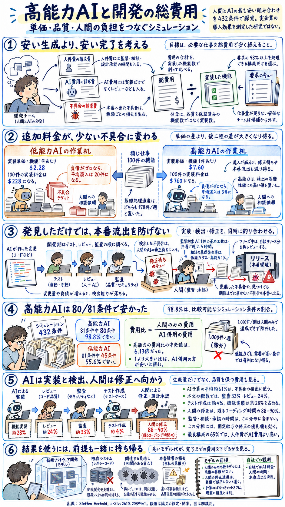

高能力AIは、なぜ開発の
総費用を下げ得るのか
トークン単価から、監督・手戻り・本番障害まで。人間とAIの最適な役割分担を探る。
対象論文：Steffen Herbold（University of Passau）What Should a Software Team Spend on Agents? Simulation-Based Cost Optimization of Mixed AI-Human Teams。2026年10月14日投稿、arXiv v1。原論文の書誌情報 ／ 全文。本稿は論文本文を主資料とし、依頼者の既存チャットを論点整理の参考にした。数値・前提は本文および公開資料と照合している。
概要
AIの利用料金が高くても、不具合の混入や人間への相談、本番障害が減れば、開発の総費用は下がり得る。
この論文は、人間とAIをどう組み合わせれば、必要な機能を最も安く開発できるかを調べたシミュレーション研究である。目的はトークン支出の最小化ではない。人件費・AI利用費・本番に流出した不具合の損失を合計し、実装した機能数で割った費用を小さくすることである。高能力AIは単価が高い一方、少ない不具合と高い検出能力により、後工程の費用を抑える設定になっている。[S1]
比較可能な条件では、高能力AIを併用する最良構成が、人間のみの最良構成をほぼ常に下回った。一方、低能力AIでは機能需要が少ない条件などで、利用料金の安さ以上に品質損失が膨らんだ。なお、ここでの「高能力」「低能力」とは論文が定義した能力・費用パラメータの組み合わせであり、実在する特定製品を実地で比較したものではない。
比較可能な81条件のうち80条件
人間のみの費用 ÷ AI併用の費用
セキュリティ監査・レビュー・テスト作成
Table 18、Section 5.3の結果。比較対象は実案件の標本ではなく、設定されたシナリオ群である。最上位の需要条件は人間のみでは達成できないため、費用比の集計から除外されている。[S1] [S3]
一枚でつながる、単価・品質・人間の負担
着目すべきは、「コード生成が安いか」という局所的な視点から、「品質損失を含めて、要求された仕事をいかに安く完遂できるか」という全体最適への転換である。次の図は論文の構造を説明するために作成したもので、原論文の図ではない。

1．必要な仕事を終えるために、何へ支出すべきか
AIに大量のコードを書かせても、レビュー待ちや修正待ちが滞留すればチーム全体の効率は上がらない。逆にAIの利用料が増えても、人間の拘束時間や障害対応をそれ以上に減らせれば、総費用は下がる。本研究が問うのは、こうした工程間の相互作用を踏まえた人間とAIの最適構成である。
論文の出発点には、開発者の給与に対して一定割合のトークン予算を確保する、という一律の考え方への疑問がある。著者は、人間の能力、必要な開発量、技術的負債の増え方、AIの能力と費用、不具合の損失を変え、条件ごとに最も安い構成を探す。したがって、得られるのは「開発者一人あたり月額いくら」という普遍的な予算ではなく、何が総費用を左右するかの関係である。[S1]
固定するのは「必要な仕事量」
チームには毎週、一定の平均件数で機能要求が届く。シミュレーションでは到着件数に確率的な揺らぎを与えつつ、要求の少なくとも98%を平均的に処理できる構成だけを費用比較の候補とする。
どれほど安くても、要求を処理しきれない構成は採用しない。「AIを使わず何も作らないのが最安」という自明な解を排除するための制約である。
動かすのは「人員・役割・工程」
人間の稼働量、役割別のAI投入数、開発期と品質保証期の比率、リリース間隔、人間のコーディング時間の配分を変化させて最適解を探索する。
比較対象となる「人間のみのチーム」も同様に最適化する。非効率な固定チームとAIチームを比べるわけではない。ただし、両モデルには後述する構造上の違いがある。
2．総費用には、人件費と本番障害の損失を含める
費用の単位は「米ドル／機能」である。分母の「機能」はモデル内で数える実装単位であり、実務における大規模開発の機能粒度とは異なる。また、分母は単純な実装完了数であり、「無欠陥で顧客価値が実証された機能数」ではない。不具合による悪影響は、分子の品質損失として計上される。[S1] [S2]
| 費用項目 | 計算方法 | モデル上の意味 |
|---|---|---|
| 人件費 | 人間のFTE × 年間総人件費 × 期間／52週 | 監督・相談・設計承認も人間の時間を消費する。仕事がなくても、置いた人員分の給与は発生する。 |
| AI利用費 | 役割ごとの単価 × 実施した仕事量（一部の役割は投入数に応じた週単位の固定費） | 機能実装・設計・修正・テスト・文書は仕事量で課金。リファクタリング・レビュー・セキュリティ監査は、モデル上、1体・1スプリント単位で費用が発生する。 |
| 品質損失 | 本番へ流出した軽微・重大・セキュリティ不具合の累積件数 × 種類別の損失額 | 見落とした不具合だけでなく、見つけてもリリースまでに直せなかった不具合も数える。本番で後から直しても、発生済みの損失は消えない。 |
このモデルでは、「不具合を検出できたから品質を確保できた」とはならない。検出後に修正する能力が不足していれば、既知の不具合であっても本番へ流出する。したがって、品質保証（検出）と修正の双方に予算と時間を割く必要がある。APIの請求額だけで費用を議論すると、この研究が捉えている最も重要なコスト構造を見落とすことになる。
損失の重みが、品質保証への投資額を左右する
| 不具合の種類 | 小規模Webサービス | 企業システム | 安全性が重要なシステム |
|---|---|---|---|
| 軽微 | 100 | 150 | 250 |
| 重大 | 25,000 | 300,000 | 7,000,000 |
| セキュリティ | 48,000 | 1,000,000 | 120,000,000 |
これらの金額は、過去の障害報告や事故調査などをもとに著者が設定した重みである。特に「安全性が重要なシステム」におけるセキュリティ損失額は、英国NHS（国民保健サービス）が受けたWannaCryランサムウェア被害の推計額を参照している。現実のシステムで脆弱性が1件流出するたびに、必ずこの金額の実害が発生すると測定したわけではない。モデル上は流出した全不具合に一律でこの重みを掛けるため、自社の意思決定に当てはめる際は、実際に悪用される確率や影響範囲を加味した「期待損失」として捉え直す必要がある。[S1]
3．人間と8種類のAIが104週間協働する開発モデル
シミュレーションは、既存のコードもテストも文書もない新規開発（グリーンフィールド）を対象とし、1週間のスプリントを104回（2年間）繰り返す。人間はプロジェクト全体の責任と重要な設計判断を担い、AIの監督や相談対応をこなしたうえで、残った時間を機能実装と不具合修正に充てる。人間の投入量は人数ではなくFTE（フルタイム換算の稼働量）で表す。例えば0.25 FTEは、週40時間労働の4分の1にあたる週10時間相当の稼働を意味する。[S1]
| AIの役割 | 担当する仕事 | モデル上の監督 |
|---|---|---|
| 機能実装 | 新機能および承認済みの設計変更を実装する。 | 必要。実装に伴い不具合と技術的負債が発生する。 |
| アーキテクチャ・設計 | 構造変更の提案を作成する。 | 必要。提案内容は人間がレビューして承認する。 |
| 不具合修正 | 検出済みの不具合を修正する。 | 必要。人間が修正した後の残件を処理する。 |
| リファクタリング | 内部構造を改善し、技術的負債を減らす。 | 不要と仮定。重要な設計変更とは区別される。 |
| コードレビュー | 変更差分に含まれる不具合を検出する。 | 不要と仮定。検出した不具合を修正待ち行列へ送る。 |
| セキュリティ監査 | セキュリティ上の不具合を専門的に検出する。 | 不要と仮定。通常のコードレビューより単価が高い。 |
| テスト作成 | 自動テストを追加し、不具合の検出率を高める。 | 必要。テストによる検出効果には上限がある。 |
| 開発者向け文書 | ドキュメントを整備し、人間の監督負担を軽減する。 | 必要。負担軽減の効果は翌週から現れる。 |
8役は支出と能力を分解するための区分であり、8種類の製品や8つの独立したAIシステムを必ず導入するという意味ではない。また、監督不要とされた役割を増やしても人間の基本監督枠を消費しないため、モデルはレビューと監査を大きく増やしやすい。
一つの週の中で、何が起きるか
- 人間の時間配分チーム内の連絡調整、AIの監督、設計レビュー、AIからの相談対応に要する時間を順次差し引き、残った時間を人間の実装と修正に割り当てる。
- 負債による能力劣化の計算蓄積した技術的負債、未処理の設計作業、相談待ちの件数に応じて、AIの処理速度や不具合検出率の低下幅を算出する。
- 機能要求の到着と実装まず人間の実装能力を使い切り、残った要求をAIが実装する。AIは人間が承認した設計変更の実装にも能力を割く。
- テストの追加当週に作成されたテストは、その週の不具合検出から直ちに効果を発揮する。
- 不具合の混入と検出開発期には、テスト、コードレビュー、セキュリティ監査の順で不具合を検出する。機能追加を止めるフリーズ期には、当該リリース分の変更を再レビューするが、テストの再実行による追加検出は行わない設定となっている。
- 設計変更を進める変更要求からAIの提案、人間の承認、実装待ちへ進む。承認した設計は次の週以降に実装できる。
- 検出済み不具合の修正人間が優先的に修正を行い、残りをAIが引き継ぐ。優先順位はセキュリティ、重大、軽微の順であり、同じ深刻度であればすでに本番環境にある不具合を先に直す。
- AIからの相談の発生AIの作業量と相談発生率に応じて人間への確認事項が生成され、翌週以降の人間の作業負担となる。
- 内部構造の改善と文書整備リファクタリングによって技術的負債を減らし、開発者向け文書を拡充して翌週以降の監督工数を引き下げる。
- 本番リリースと損失計上リリース週であれば本番環境へ展開する。この時点で未検出の不具合と、検出済みだが未修正の不具合が本番へ流出し、品質損失として計上される。
Section 3.6に記された10段階の計算手順を、順序を保って要約した。処理の順序は厳密に定義されており、設計承認や文書整備の効果がいつ反映されるかもこの順序に従う。[S1]
4．「高能力」と「低能力」はどう定義されているか
本研究を読むうえで最も注意すべきは、AIの能力差が実験で新たに計測されたものではなく、シミュレーションの「入力条件（前提）」として与えられている点である。著者は既存のコーディング・レビュー系ベンチマークや先行研究、APIの料金体系などを参考に、以下のパラメータ群を設定した。AIの能力と単価を独立に動かす実験計画にはなっていないため、「能力だけを上げた場合にいくら安くなるか」を個別に切り出して推定することはできない。[S1]
| パラメータ | 低能力 | 中能力 | 高能力 | 悲観条件 |
|---|---|---|---|---|
| 機能実装1件の費用 | $2.28 | $3.80 | $7.60 | $76.00 |
| 機能1件の基礎不具合率 | 0.20 | 0.05 | 0.03 | 0.20 |
| コードレビューの基礎検出率 | 75% | 82% | 89% | 75% |
| 監査の基礎セキュリティ検出率 | 78% | 83% | 88% | 78% |
| 基礎相談発生率 | 3% | 2% | 1% | 3% |
| 機能実装の基礎処理能力 | 178件／週 | 178件／週 | 178件／週 | 178件／週 |
高能力AIは、実装単価が低能力AIの約3.3倍だが、基礎不具合率は約6.7分の1である。処理速度は全階層で同じなので、高能力AIの優位性を「速いモデルだから」と読むのは適切ではない。主な差は、品質、検出、相談、負債を減らす能力に置かれている。
不具合率0.20は、機能が20%の確率で必ず一つだけ失敗する、というベルヌーイ確率ではない。実装件数に率を掛けた値を平均とするポアソン分布から、不具合件数を引く。100件の実装なら、負債による増幅前の平均は20件と3件になる。率はSWE-bench Verifiedの未解決率から置いた近似であり、現実の不具合密度を直接測った値ではない。
単価は、機能1件に累積入力200万トークンと出力4万トークンなどを要すると仮定して計算している。既存コードや会話履歴を繰り返し入力するため、「累積入力」は一つの巨大なプロンプトの長さとは違う。悲観条件は低能力のまま、高能力の単価をさらに10倍した設定で、通常の市場価格を代表する階層ではない。[S1] [S2]
432シナリオは、五つの軸の組み合わせ
| 変動軸 | 段階と設定値 | 総費用への影響経路 |
|---|---|---|
| 人間の能力・人件費（3段階） | 年間総人件費 $100,000／$150,000／$250,000。機能実装時間は4／2／1時間、修正時間は1／0.5／0.25時間。 | 給与水準の上昇に伴い、作業速度も速くなるよう連動して変化する。 |
| 機能要求の到着量（4段階） | 平均 3／12／75／1,000件・週。 | 需要が大きいほど、AIによる処理能力の拡大と品質保証の自動化が活きる。 |
| 負債の動態（3段階） | 実装・修正に伴う技術的負債の増分は 0.02／0.06／0.13。最大負債時の処理能力は基準の 94%／77%／60%。 | 負債の蓄積が、AIの速度低下・不具合増加・検出率低下・相談増加を引き起こす。 |
| AIの能力・単価（4段階） | 低能力／中能力／高能力／悲観条件。 | 「単価の安さ」と「不具合や手戻りの少なさ」のどちらが総費用に効くかを比較する。 |
| 本番不具合の損失（3段階） | 小規模Web／企業システム／安全性が重要なシステム。 | 流出時の損失が重いほど、事前の検出・予防・修正にコストをかける合理性が高まる。 |
3 × 4 × 3 × 4 × 3 ＝ 432通りである。需要の最上位1,000件／週と悲観条件は、観測した通常範囲を超えてモデルを試すための設定である。通常の需要3・12・75件は、人気があり活動が継続しているオープンソース1,000プロジェクトの週あたりissue件数から置いている。企業の機能要求をそのまま測定した件数ではない。[S1]
5．トークン単価の差が、総費用で逆転する仕組み
不具合の抑制効果は後続のあらゆる工程に波及する
混入が少なければ、レビューで見つける対象も、修正待ちも、本番へ出る候補も少なくなる。高能力AIには検出率の高さも設定されているため、混入と見逃しの両方が減る。費用が高いセキュリティ不具合の流出を抑える効果が、実装料金の差を上回り得る。
ただし、基礎検出率89%という数値を「あらゆる変更で常に89%の不具合を見つけられる」と解釈してはならない。実際の検出率は、蓄積した技術的負債や、レビューAI 1体あたりの処理負担によって低下する。そのため、実装担当のAIだけを増やしてレビュー体制を拡充しなければ、変更量にレビューが追いつかず、かえって見逃しが増える仕組みになっている。
実装・検出・修正の能力を同時に釣り合わせる
AIがどれほど高速にコードを実装しても、人間の設計承認や不具合修正がボトルネックになれば、未処理の作業や技術的負債が積み上がり、AI自身の生産性も劣化する。したがって最適化アルゴリズムは、単にAIの投入数を最大化するのではなく、こうした工程間の待ち行列とコストが均衡する編成を探し出す。
高能力AIの真価は、APIの請求書だけを見ていては分からない。人件費や品質損失まで含めた総費用で比較して初めて、「単価が高くても、使った方が全体として安くなる」という逆転現象が浮かび上がる。
「基本の監督工数」と「AIからの相談対応」は別枠で効いてくる
すべてのAI能力階層で、監督が必要なAI1体あたりの基本監督工数は週2.5時間で共通である。文書が整えば、この工数を軽減できる。一方、AIが処理した仕事から人間への相談が生じる率は、低能力3%、高能力1%と異なる。負債はこの相談率をさらに増やす。したがって「高能力AIだから、1体あたりの基本監督時間を短く置いた」研究ではない。必要なAI構成、相談件数、負債、人員の違いが最終的な負担に表れる。[S1]
たとえば文書による軽減がなく、1 FTEが監督対象AIを10体持てば、基本監督だけで週25時間を使う。週40時間から設計承認や相談対応も引くので、AIを増やし続けると、人間が直接コードを書く余力は減る。この例は基本工数を説明する単純計算であり、最適構成の推奨数ではない。
6．高能力AIは80／81条件で安く、低能力AIは45／81条件
Table 18は、人間のみの最良構成の費用を、AI併用の最良構成の費用で割っている。比が1より大きいほどAI併用が安い。1より小さければ、人間のみが安い。最上位の需要1,000件／週は人間のみでは満たせなかったため、残る324シナリオで比較している。各AI階層では81シナリオである。[S1]
人間のみの構成より総費用が安くなった条件の割合
グラフは0–100%の同一尺度。Table 18の数値をHTML/CSSで描画した。公開CSVを再集計すると、81条件のうち人間のみより安くなった条件数は、順に45・71・80・36条件となる。[S3]
| AI階層 | 需要3件／週 | 需要12件／週 | 需要75件／週 | 全体［四分位範囲］ | AIが安い割合 |
|---|---|---|---|---|---|
| 低能力 | 0.81 | 0.89 | 4.70 | 1.11［0.52, 2.31］ | 55.6% |
| 中能力 | 1.71 | 3.20 | 15.08 | 3.35［1.38, 8.18］ | 87.7% |
| 高能力 | 2.18 | 5.66 | 23.79 | 6.13［2.40, 15.03］ | 98.8% |
| 悲観条件 | 0.74 | 0.88 | 2.10 | 0.93［0.45, 1.63］ | 44.4% |
| 全階層 | 1.12 | 1.74 | 8.65 | 1.93［0.88, 6.50］ | 71.6% |
高能力AIにおける費用比の中央値「6.13倍」は、AI併用時の総費用が人間のみの約16.3%（約83.7%の削減）に収まったことを意味する。ただし、これはあくまで各シナリオにおける費用比の中央値である。全シナリオの費用総額を合算した削減率ではなく、実務に導入すれば必ず83.7%のコスト削減が保証されるという予測値でもない。また、併記された四分位範囲はシナリオ間の結果のばらつきを示しており、単一シナリオ内での統計的な信頼区間とは異なる。
全体：低能力1.11倍、中能力3.35倍、高能力6.13倍、悲観条件0.93倍。
上の表と同じ数値を、需要規模ごとに切り替えて比較できる。
低能力AIは「55.6%の条件で安い」にもかかわらず、なぜ優位性が不安定なのか
低能力AIは、需要が高い条件では処理量の拡大で有利になり得る。一方、需要3件・12件の中央値では費用比が1を下回る。全体の中央値1.11だけなら小さな改善に見えるが、四分位範囲は0.52–2.31と広く、条件次第で損得が逆転する。「全く役立たない」ではなく、安価なAIを加えるだけでは、費用削減を安定して期待できないという読み方になる。
最上位の1,000件／週では、すべてのAI併用シナリオで要求を満たす構成が見つかった。人間のみは探索範囲の最大10 FTEでも満たせず、最も能力の高い人間のチームでも約310件／週だった。これは小規模な単一チームと固定した工程の範囲内の結果であり、人間組織一般の最大生産性ではない。[S1]
Table 17の「7.6倍」は、別の比較
Table 17は、最良構成の機能1件あたり費用に対し、シナリオの軸がどう関係するかを対数回帰で整理している。低能力AIの係数は高能力AIを基準に7.6倍、悲観条件は9.5倍である。人間のみとの費用比6.13とは比較対象も集計方法も違うので、両者を掛け合わせて新しい削減率を作ってはいけない。
| 変動軸 | 低 | 中 | 高 | 第4条件 |
|---|---|---|---|---|
| 本番不具合の損失 | 1.0 | 4.6 | 72.6 | なし |
| AIの能力・単価 | 7.6 | 1.9 | 1.0 | 悲観9.5 |
| 負債の動態 | 1.0 | 2.3 | 4.8 | なし |
| 機能需要 | 2.0 | 1.3 | 1.0 | 最上位1.3 |
| 人間の能力・人件費 | 1.1 | 1.0 | 1.0 | なし |
回帰の決定係数は0.938だが、これはモデル内の条件と費用の関係をよく説明できるという意味である。実企業の開発費用を93.8%の精度で予測できる、という意味ではない。損失と負債が大きな費用要因になることも、この表から分かる。[S1]
7．具体例の分析：内訳を開くとAPI費用の小ささが際立つ
中央値や回帰係数だけでは、実際の費用内訳が見えにくい。そこで公開データのoptima.csvから、人間の能力・機能需要・負債の動態・不具合損失をすべて「中段階」に固定したシナリオを取り出し、内訳を比較した。週あたりの平均需要は12件、損失規模は企業システムを想定した条件である。なお、各行はそれぞれのAI階層において最適化された別個のチーム編成であり、同一のチーム編成でAIモデルだけを差し替えた比較ではない。[S3]
| 構成 | 人間のFTE | 人件費 | AI費用 | 品質損失 | 総費用 |
|---|---|---|---|---|---|
| 人間のみ | 3.00 | 735.40 | 0.00 | 206.38 | 941.79 |
| 低能力AI | 2.00 | 490.60 | 6.71 | 1,201.92 | 1,699.23 |
| 中能力AI | 0.25 | 61.35 | 14.88 | 337.92 | 414.15 |
| 高能力AI | 0.25 | 61.37 | 17.38 | 131.62 | 210.37 |
| 悲観条件AI | 2.00 | 490.03 | 102.49 | 1,238.49 | 1,831.01 |
低能力から高能力への変更では、AI費用は1件あたり約$10.67増えている。しかし品質損失は約$1,070.30減り、人件費も減るため、総費用は大幅に下がる。低能力AIのAPI費用$6.71だけを見れば安価だが、この条件の総費用は人間のみの約1.80倍になる。
ここでの0.25 FTEは、週10時間相当の人員まで許す探索条件による結果である。企業の固定的な採用・配置や待機要員まで含む予算を保証する値ではない。また人件費は年間給与から計算するが、表は機能数で割った値なので、同じ0.25 FTEでも実装件数の揺らぎによりわずかに違う。
抽出条件：h-m_p-m_d-m_a-{l,m,h,p}_b-m。人間のみはh-m_p-m_d-X_a-X_b-m。いずれの構成でも週平均の実装完了数は約11.76〜11.78件となり、要求の98%以上を満たしている。金額はモンテカルロ試行の平均値であり、端数処理の関係で各列の和と総費用が一致しない箇所がある。
8．役割分担の変化：AI予算は「検出」へ、人間は「修正」へ
AI予算は、実装より検出に多く配分される
432シナリオの最良構成を平均すると、AI利用費の約61%がセキュリティ監査・コードレビュー・テスト作成という「検出」系の役割に配分され、機能実装への配分は約28%にとどまった。検出に多くのAI予算を投じても、本番流出による高額な品質損失を防げるため、結果として総費用が安くなるからだ。
ただし、この「約61%」はあくまでAI利用費の内部構成比であり、人件費や品質損失を含めた総費用全体の61%を占めるわけではない。また、各シナリオ内での配分比率を算出したうえで全シナリオの平均をとった値であり、全シナリオの金額を合算した比率でもなければ、あらゆる企業に一律で推奨される黄金比でもない。
Section 5.3本文の概数をもとに作成。グラフは0–100%の同一尺度。「その他」は設計・不具合修正・リファクタリング・文書作成の合計。公開データにはさらに詳細な内訳が含まれる。[S1] [S3]
人間が修正に充てる「88–90%」の分母は、残余のコーディング時間
中能力・高能力AIを併用する最良構成では、人間に残されたコーディング時間の約88〜90%が不具合修正に振り向けられる。注意したいのは、この割合の分母が「総勤務時間」ではない点だ。連絡調整、AIの監督、設計承認、相談対応に要する時間はあらかじめ差し引かれており、そのうえで残った「人間が自ら手を動かせる時間」のうち何割を修正に充てるかを示している。
開発期の修正比率の中央値は、中能力AIで75%、高能力AIで80%。多くの構成では4週のうち2週が機能追加を止めるフリーズで、その期間のコーディングはすべて修正へ向く。各週のコーディング可能時間が同じなら、全体では中能力が87.5%、高能力が90%になる計算であり、論文はこれを約88–90%と説明している。
この分担には、人間の給与は固定費なので人間の修正能力を先に使うこと、人間の修正速度は負債で下がらないこと、AI修正は負債で遅くなることが効いている。「人間はAIより修正が得意」という一般命題を実証した結果ではなく、この費用モデルで有利だった役割配分である。
最良構成の過半数では、依然として人件費がAI費用を上回る
最良構成の65%では人件費がAI費用より高く、AI費用／人件費の中央値は0.32だった。需要が高くなるとAIへの配分が増えるが、高いトークン支出そのものは生産性の証拠にならない。著者は、最もAI費用比率が高くなる悲観条件でも、人間のみより安い条件は半数未満だったことを指摘する。[S1]
短いリリース周期と、長いフリーズが選ばれた理由
再レビュー・修正
週末にリリース
最良構成の88.9%では4週間のリリース周期が、99.1%では2週間のコードフリーズ（機能追加の凍結期間）が選択された。これは、探索候補として用意されたリリース周期（1・2・4・13週）とフリーズ期間（0・1・2週）の組み合わせから選ばれた結果である。新機能の実装を止めてでも、潜んでいる不具合を再レビューで洗い出し、リリース前に修正しきることが、高額な本番流出損失を防ぐうえで極めて効果的だからだ。
ただしフリーズ期の再レビューは、前に見逃した不具合にも改めて同じ検出機会を与える。現実では同じ盲点を繰り返す可能性があるため、この仮定は再レビューを有利にし得る。4週周期・2週フリーズを、そのまま継続的デリバリーへの反証や推奨プロセスにすることはできない。
9．前提と限界：結果を自社へ当てはめる際の注意点
この論文の価値は、費用を押し上げる経路を一つのモデルに結びつけた点にある。同時に、結果の大きさや最良の配分は、以下の具体的な前提に左右される。論文自身が認める簡略化と、比較を理解するための条件を整理する。[S1]
| モデルの前提 | 本研究での設定内容 | 解釈・適用時の留意点 |
|---|---|---|
| 能力から不具合率への変換 | ベンチマークの未解決率などをもとに、機能実装時の基礎不具合率を設定。 | ベンチマーク成功率と、自社の要件理解・運用不具合は同じ指標ではない。未解決率を実務の不具合率と直接同一視できない。 |
| 人間のみの比較モデル | 人間のみのモデルには技術的負債の動態を組み込まず、日々の作業時間内に負債対応が含まれると仮定（品質保証の時間配分は最適化）。 | 人間とAIに完全に対称な負債モデルではない。負債による差を、同じ条件での純粋な能力差と読むことはできない。 |
| 人間の実装・修正速度 | 技術的負債が蓄積しても、人間の単位作業時間は一定。一方、AIの実装・修正・検出能力は負債で劣化する。 | 「人間が修正へ集中する」分担に影響し得る。既存システムで人間も遅くなる状況は十分に表していない。 |
| 監査・レビューの監督工数 | AIによるコードレビュー、セキュリティ監査、リファクタリングは、人間の基本監督時間を消費しない。 | 検出AIを増やしやすい。実務の指摘確認や誤検出対応が多ければ、人間の必要時間は変わる。 |
| 再レビュー時の見逃し | フリーズ期の再レビューにおける検出判定を、過去の見逃しとは統計的に独立と仮定。 | 同じ誤解や共通の盲点が続く環境では、再レビューの効果が過大になり得る。 |
| 本番流出時の損失計上 | 流出したすべての不具合に対し、深刻度別の固定損失額を一律に掛け合わせる。 | 潜在的な脆弱性から事故に至る確率、事故の相関、影響範囲に応じた損失を個別には扱わない。 |
| 開発対象と期間 | 新規開発を2年間。仕事の粒度と単価は固定し、規模拡大による単位作業費用の増加を入れない。 | レガシー、複雑な組織調整、稼働後の長期保守、機能ごとの難易度差は別に評価する必要がある。 |
| 最適構成の探索手法 | AI併用チームは進化的アルゴリズムで探索し、人間のみのチームは有限の選択肢を全列挙。人員規模は0.25〜10 FTE。 | AI側は数学的な大域最適を証明していない。10 FTE超や複数チームの比較結果でもない。 |
シミュレーションの「計算精度」と、現実に対する「予測精度」は別物
最適化の過程では、各構成案をまず100回試行し、最終的に残った有望な候補を1,000回再計算して、費用の95%ブートストラップ信頼区間を求めている。そして、最小費用を出した構成と信頼区間が重なる構成はすべて「統計的に区別できない最良候補群」として残し、同程度の費用であればAIの投入数が少ないシンプルな構成を採用するルールになっている（最終的な候補群は中央値で62構成存在し、唯一の絶対解が一つだけ定まるわけではない）。
報告する費用の信頼区間の相対半幅は中央値1.6%で、著者は典型条件で約2%の計算精度と説明する。これは設定済みモデルの乱数に由来する不確かさである。不具合率、事故損失、監督工数の仮定が正しいかという不確かさまでは含まない。なお、信頼区間の重なりで「区別できない」とするのは論文の選別ルールであり、すべての構成の費用が等しいことの証明ではない。[S1]
著者自身も今後の課題として、実際の開発プロジェクトのデータを用いたモデルの検証、とりわけ「AIの不具合検出能力」と「本番流出不具合の実損額」の実証を挙げている。本稿の執筆にあたっては公開データを再集計して論文中の主要数値を確認したが、シミュレーション全体の再実行や実地検証を行ったわけではない。
10．回収シミュレーション：追加料金は何件の不具合削減で元が取れるか
以下は仕組みを理解するための簡略計算で、論文のシミュレーションを再実行するものではない。Table 13の実装単価$2.28／$7.60と基礎不具合率0.20／0.03だけを使い、負債はゼロ、検出・修正後に残る割合は両AIで同じと仮定する。人件費や品質保証の差は「高能力側の追加費用」にまとめる。
この入力では、高能力側が$2,718安くなる。
平均混入は20件と3件。本番に残る期待件数は0.20件と0.03件。
初期値での検算：低能力側は 100件 × $2.28 ＋ (100件 × 0.20 × 1% × $25,000) ＝ $5,228。高能力側は 100件 × $7.60 ＋ (100件 × 0.03 × 1% × $25,000) ＋ $1,000 ＝ $2,510。期待件数が小数になるのは、多数回試行した際の平均値を表すためである。
一般には、不具合の平均削減数 × 本番に残る割合 × 1件の期待損失が、実装料金とその他の追加費用の増分を上回れば回収できる。初期値では、避けられる本番流出の期待件数は0.17件で、追加費用は$1,532。したがって流出1件の期待損失が約$9,012を超えると、簡略計算では高能力側が有利になる。
もちろん、この簡易計算では人員編成の変化やAI階層ごとの検出率の差、修正待ちの滞留、技術的負債、リリース周期といった要素をすべて捨象している。計算機が端数まで正確な金額を表示することと、実プロジェクトの損益を正確に予測できることは別問題である。論文のシミュレーションが扱う複雑な相互作用のうち、「実装単価と品質損失のバランス」だけを切り出した思考実験ツールとして活用してほしい。
11．実務への応用：「モデル単価」から「完了までの総費用」へ視点を広げる
ここに示すのは、論文の知見を踏まえて筆者が整理した実務向けのアプローチであり、論文内で実地検証された手順ではない。自組織でAIの費用対効果を評価する際は、比較の単位を「同じ難易度のタスクを、同じ受入基準（Definition of Done）で完了させるまでの総費用」に揃えることが重要だ。高価なモデルを使うこと自体を目的化せず、品質と人間の拘束時間にどのような変化が生じたかを計測する必要がある。
- AI費用：最初の生成だけでなく、再試行、レビュー、テスト、修正までの利用量をタスクにひもづける。API料金やサブスクリプションの請求額と、比較用の単価換算は区別する。
- 人間の時間の内訳記録：AIの監督、要件の補足説明、相談（エスカレーション）対応、設計承認、AIレビュー指摘の真偽確認、そして人間自身による手動修正の時間を分けて記録する。「AIの出力が速いこと」と「人間の拘束時間が減ること」は別々に検証しなければならない。
- 品質指標の追跡：初回提出コードの受入率、レビューでの見落とし、差し戻し回数、修正完了までのリードタイム、本番流出件数を追跡する。レビューでの検出件数が増えた場合は、「実装品質が劣化したのか」それとも「検出能力が向上したのか」を切り分ける。
- 比較条件の統制：使用したモデル名だけでなく、与えたコンテキスト、利用ツール、テスト環境、レビュー手順、受入基準を揃えて記録する。「安価なモデルによる雑な試行」と「高価なモデルに十分な文脈を与えた試行」を無条件に比較してはならない。
- 段階的な集計と感度分析：まずは「完了タスク1件あたりのAI費用＋人間の時間コスト」で比較し、そこに観測可能な手戻り・障害コストを加算する。滅多に起きない重大インシデントの期待損失については、日常の実測コストとは切り離し、損失額の仮定を複数置いた感度分析として評価する。
12．公開コードとデータから検証できること
著者はシミュレーションと集計コードをGitHubで公開し、実験結果をZenodoで公開している。GitHubにはモデル、探索、選別、可視化、432シナリオの設定と36条件の人間のみの設定がある。READMEによると全実験は約520コア時間を要した。結果の再集計・図の再生成と、探索全体の再実行は分けられる。[S2] [S3]
本稿執筆にあたって実施した照合内容と主要データファイル
原論文v1の全章・表・図の説明を読み、元チャットの主要数値と前提を照合した。公開コードはコミットd486b91c670673b9f03da7031f06e7577893cbbfの費用計算とAI設定を参照した。Zenodoのresults-analysis.zipを取得し、以下のCSVからTable 18の割合・中央値と具体例を再集計した。
baseline_uplift.csv：AI併用432条件と、対応する人間のみの構成との費用比を記録したファイル。比較可能フラグで絞り込むと324行（各AI階層につき81行）となる。optima.csv：AI併用432条件と人間のみ36条件の最良構成データ。人件費・AI費用・品質損失の内訳や、人員（FTE）、週あたりの処理量が収められている。process_summary.csv：各シナリオ内で算出された役割別のAI費用比率などを集計したファイル。
なお、この照合はあくまで著者が公開した計算結果の整合性を確認したものであり、実際の企業データを用いた独立検証ではない。シミュレーション全体の再実行や、全入力パラメータの妥当性の追試、現行の商用LLMの能力測定などは行っていない。
参考文献
- [S1] Steffen Herbold. What Should a Software Team Spend on Agents? Simulation-Based Cost Optimization of Mixed AI-Human Teams. arXiv:2610.20394v1、2026年10月14日。書誌・版情報。設定はSections 3–4、主要結果はSection 5、解釈はSections 6–7。
- [S2] aieng-lab. se-with-ai-simulation. シミュレーションの公開実装、設定ファイル、再現手順（参照コミット固定）。閲覧日：2026年10月19日。
- [S3] Steffen Herbold. Replication Materials for “What Should a Software Team Spend on Agents? Simulation-Based Cost Optimization of Mixed AI-Human Teams”. DOI:10.5281/zenodo.23358924。
results-analysis.zip内の集計データを参照。閲覧日：2026年10月19日。